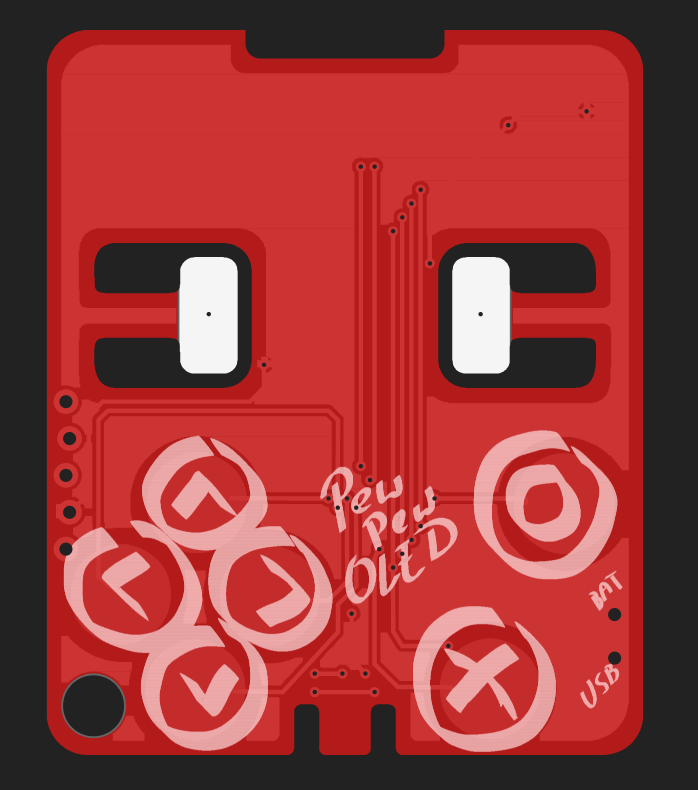
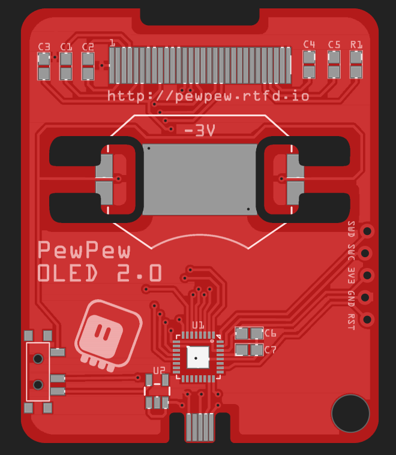

Version 2¶
Published on 2021-06-23 in PewPew OLED.
Second attempt, with longer battery tabs — so they will hopefully have enough flex in them to hold the battery without breaking. I also had to re-route some traces, as there wasn’t enough room around the holes anymore. Finally, I added fancier silkscreen on the front. I’m thinking this time I will use a red PCB, so that the traces are not so apparent on the front.

